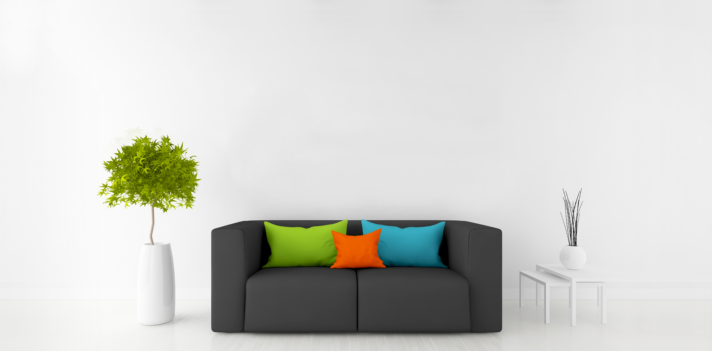
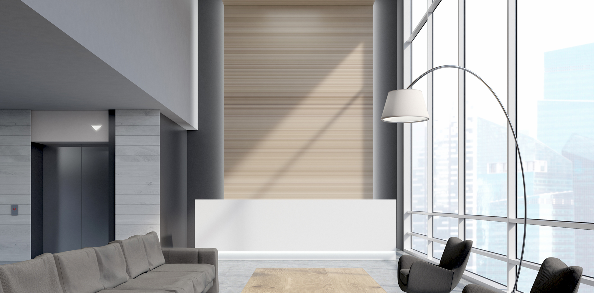
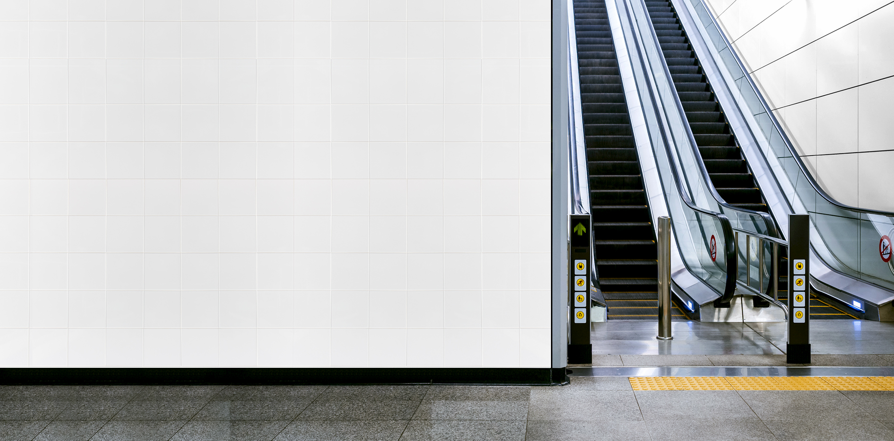
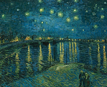

사이버갤러리 보기



3m
2m
1m
0m

작품정보
| 작품명 | 바람에게서 듣다 |
|---|---|
| 제작년도 | 1979년 |
| 크기 | 80.3cm X 130.3cm, 31.61inch X 51.3inch |
| 장르 | 회화 |
| 테마 | 풍경 |
| 컬러 |
빨강색
오렌지색
갈색
노랑색
녹색
하늘색
파란색
흰색
검정색
회색
보라색
분홍색
|
| 재료 | 캔버스 위 유채물감 |
| 설명 | ‘바람에게서 듣다’는 1979년 OO사에 의탁하던 시절 그렸던 작품이다. (…생략) 바람에게서 듣다’는 1979년 OO사에 의탁하던 시절 그렸던 작품이다. 바람에게서 듣다’는 1979년 OO사에 의탁하던 시절 그렸던 작품이다. 바람에게서 듣다’는 1979년 OO사에 의탁하던 시절 그렸던 작품이다. 바람에게서 듣다’는 1979년 OO사에 의탁하던 시절 그렸던 작품이다. |
| 작품가 | 15,000,000원 |
| 대여상태 | 대여가능 |
| 해시태그 |
작가정보

| 작가 이름 | 홍길동 |
|---|---|
| 예명(호) | 의적 |
| 출생년도 | 1929 |
| 국적 | 대한민국 |
| 홈페이지 | http://www.gokams.or.kr |
| 페이스북 | http://www.facebook.com/gokams |
| 자기소개 | 담양의 A갤러리를 중심으로 활동중입니다. 언제든 작품이 필요하시면… 담양의 A갤러리를 중심으로 활동중입니다. 언제든 작품이 필요하시면 담양의 A갤러리를 중심으로 활동중입니다. 언제든 작품이 필요하시면 담양의 A갤러리를 중심으로 활동중입니다. 언제든 작품이 필요하시면 언제든 작품이 필요하시면 담양의 A갤러리를 중심으로 활동중입니다. 언제든 작품이 필요하시면 담양의 A갤러리를 중심으로 활동중입니다. 언제든 작품이 필요하시면 언제든 작품이 필요하시면 담양의 A갤러리를 중심으로 활동중입니다. 언제든 작품이 필요하시면 담양의 A갤러리를 중심으로 활동중입니다. 언제든 작품이 필요하시면... (생략) |
| 해시태그 |